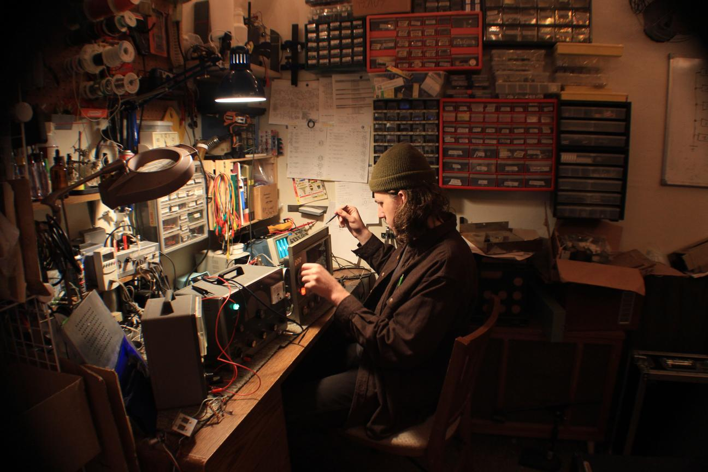

I build and repair electronics in Santa Cruz, CA and I started this website to document the work that I've been doing for my business and for fun. I studied robotics at UC Santa Cruz and have always had a passion for audio which is what led me to pursue music electronics. Most of the projects that I do are my own custom builds and repairs of musical equipment. If you are in need of repair, interested in commisioning a custom build, or have any questions send me a message.
